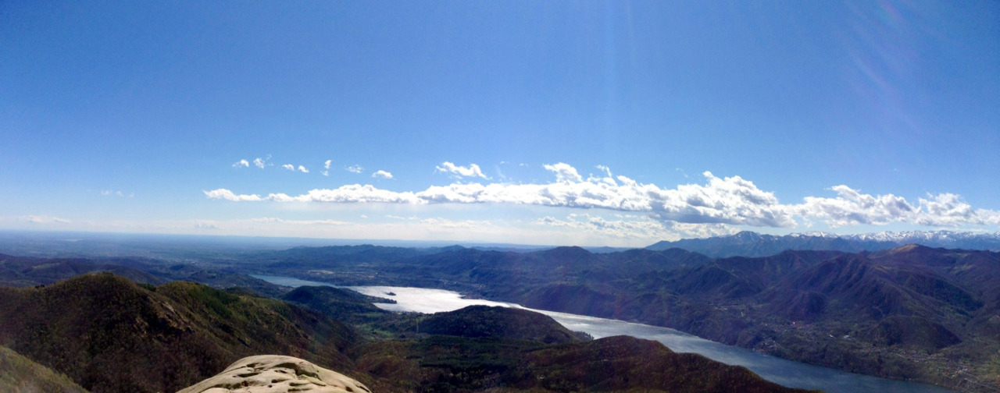
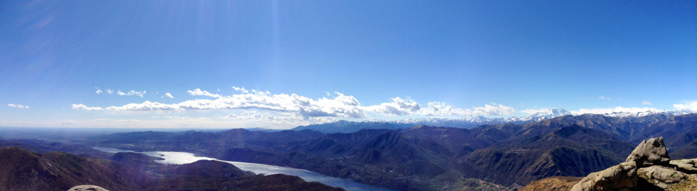
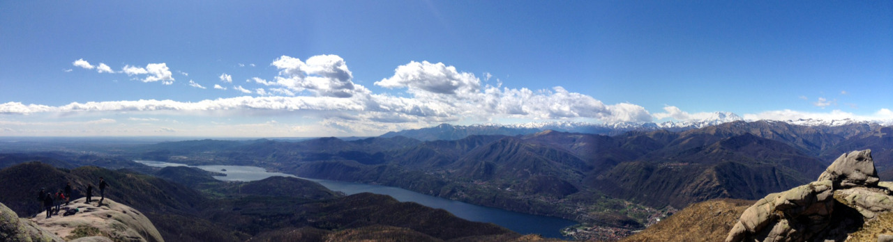
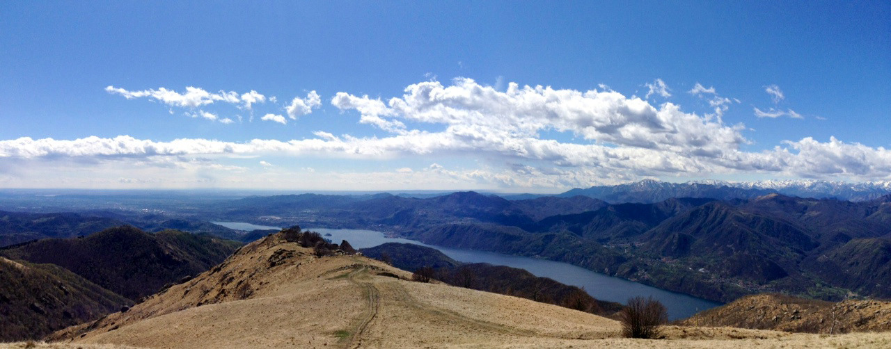
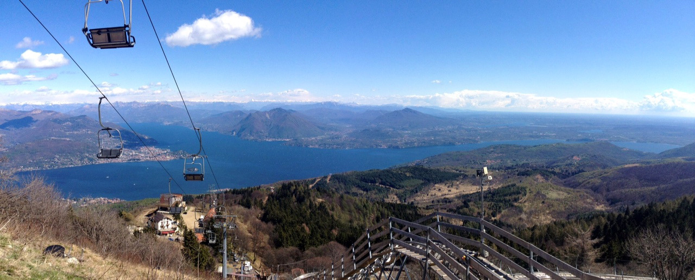
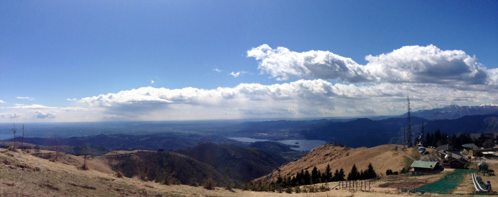
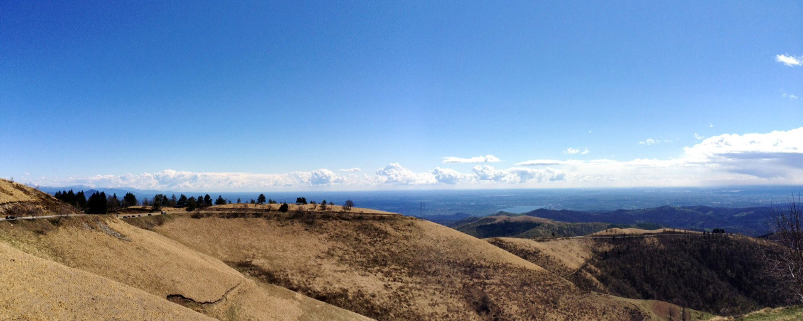

Sun, 22 Apr 2012 02:44:46 · italy · travel · hiking · lago d'orta · photography · iPhone · wanderlust
hello again world after long absence from the







Hello again, world.
After long absence from the blogosphere, I finally able to find the time to share some bit and pieces from my latest stint in Europe in the past two months. Okay, another reason is because the sunny blue sky that one usually enjoys in Santa Monica choose to desert me today.
So enjoy these panoramic photos of Lago D'Orta, San Guilio, Northern Italy. These series were taken entirely using iPhone 4s with no filter. I decided not to bring my Leica in this trip and counting solely on the iPhone. I reckon, they ain’t too shabby of a pix, no?